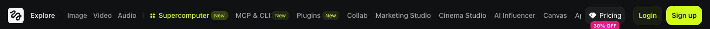
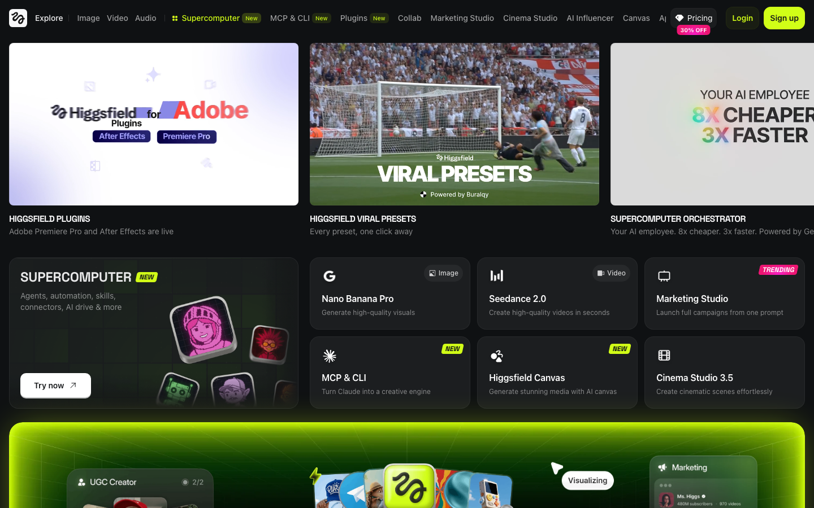
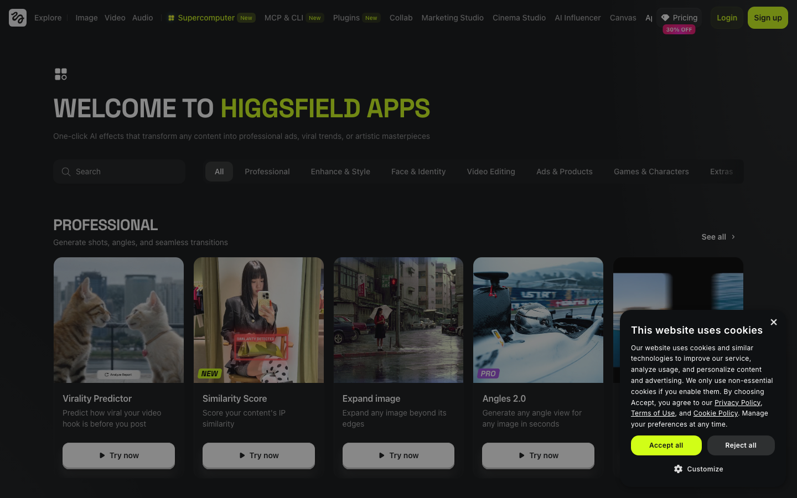

Part 1 · 힉스필드 전체 지도
0:00 – 0:30 · 30분힉스필드란?
텍스트(프롬프트)나 이미지를 입력하면 이미지와 영상을 만들어주는 AI 생성 플랫폼입니다.
촬영·외주 없이 혼자서 숏폼·광고를 제작할 수 있습니다.
실제 힉스필드 상단 메뉴 — 직접 캡처

| 메뉴 | 하는 일 | 배우는 날 |
|---|---|---|
| Image | 이미지 생성 · text-to-image · image-to-image | ✅ Day 1~2 |
| Video | 이미지→영상 · Seedance 2.0 · Kling · Veo 등 | Day 3 |
| Audio NEW | AI 음악·효과음 생성 | Day 3 |
| Supercomputer NEW | 워크플로 자동화 · AI 에이전트 · 스킬 | Day 4 |
| MCP & CLI NEW | Claude Code 연결 · 채팅으로 생성 자동화 | Day 1 (오늘 맛보기) |
| Plugins NEW | Adobe Premiere Pro / After Effects 연동 | 참고 |
| Collab | 팀 협업 · 프로젝트 공유 | 참고 |
| Marketing Studio | 제품 광고 영상 자동화 · UGC · TV Spot | Day 5~6 |
| Cinema Studio | 시네마틱 영상 · 카메라 제어 · 멀티샷 (v3.5) | Day 4 |
| AI Influencer | AI 인플루언서 생성 · Soul ID 학습 | Day 2 |
| Canvas | AI 캔버스 · 미디어 편집 통합 작업 | Day 4 |
| Apps | 이미지 편집 툴 모음 (Angles · Relight · Expand 등) | ✅ Day 1 (오늘 실습 E) |
오늘은 Image와 Apps를 중심으로 실습합니다. 나머지는 Day 2~6에서 직접 씁니다.
크레딧 = 택시 미터기
- 이미지 1장 ≈ 수 크레딧 / 영상 1편 ≈ 이미지의 10~30배
- 4K·고해상도는 1k보다 훨씬 비쌈
연습은 항상 1k. 마음에 드는 것만 고품질로 재생성.
Part 2 · 이미지 생성 이론 — 프롬프트 5요소
0:30 – 1:20 · 50분AI는 어떻게 이미지를 만드나요?
"그리는" 게 아니라 노이즈를 걷어내는 과정. 같은 프롬프트도 매번 결과가 달라집니다.
① 피사체 — 뭐가 있나
이미지의 주인공입니다. 사람, 사물, 장소, 동물 모두 가능.
a candle on marble
fresh flowers in a vase
a stack of books
a man in a white shirt
a child laughing
a silhouette
a rooftop at sunset
a forest path
a minimalist bedroom
avocado toast
a cocktail glass
a breakfast table
② 스타일·무드 — 어떤 느낌
같은 피사체도 스타일 키워드 하나로 완전히 달라집니다. 아래 4장은 동일한 피사체(커피잔)에 스타일만 바꾼 결과입니다.


자주 쓰는 스타일 키워드 모음
airy and bright
light and fresh
Scandinavian style
pastel tones
luxury dark
cinematic noir
dramatic shadows
deep and rich
warm amber tones
rustic and homey
vintage film feel
cottagecore
fashion magazine
high contrast
graphic bold
art direction
③ 조명 — 빛의 성격
조명은 이미지의 감정을 결정합니다. 같은 장면도 조명 키워드 하나로 완전히 달라집니다.


조명 키워드 사전
window light
overcast light
morning sunlight
blue hour
warm ambient light
candlelight glow
sunset backlighting
warm rim light
soft box light
side lighting
backlit with halo
neon accent light
low key lighting
dramatic shadows
film noir lighting
high contrast light
④ 구도·카메라 — 어떤 앵글, 얼마나 가까이
같은 피사체를 어디서, 얼마나 가까이 찍느냐에 따라 이미지의 목적이 달라집니다.


구도·카메라 키워드 사전
low angle
high angle
top-down / flat lay
bird's eye view
close-up
medium shot
wide shot
environmental shot
deep depth of field
35mm lens
50mm lens
85mm portrait lens
centered composition
diagonal composition
negative space
vertical composition
⑤ 레시피 키워드 — 항상 붙이면 좋은 것들
프롬프트 끝에 photorealistic만 붙여도 품질이 확 올라갑니다. 먼저 이것만 넣어보세요.
모델 선택 기준
| 모델 | 언제 쓰나 | 속도 | 크레딧 |
|---|---|---|---|
| Nano Banana 2 | 일반 장면 고품질, 오늘 기본 | 보통 | 보통 |
| Nano Banana | 빠른 시안·아이디어 확인 | ⚡ 빠름 | 💚 저렴 |
| Cinema Studio 2.5 | 영화·광고 시네마틱 톤 | 보통 | 보통 |
| Soul 2.0 | 인물·패션·UGC 얼굴 표현 | 보통 | 보통 |
| Flux Kontext | 기존 이미지를 편집할 때 | 보통 | 보통 |
종횡비 선택
| 비율 | 용도 |
|---|---|
| 9:16 ← 오늘 | 인스타 릴스·틱톡·유튜브 쇼츠 |
| 16:9 | 유튜브·광고 (Day 5~6) |
| 1:1 | 인스타 피드 정사각 |
| 4:5 | 인스타 세로 피드 |
Part 3 · 강사 라이브 시연
1:20 – 1:40 · 20분지금은 따라하지 말고 지켜보세요. 방법을 보고 나서 실습합니다.

- 1접속 및 메뉴 확인higgsfield.ai → Image 메뉴, 화면 구조 설명
- 2설정 3가지 먼저Model = Nano Banana 2 / Aspect Ratio = 9:16 / Resolution = 1k
- 3기본 프롬프트로 첫 생성카페 프롬프트 그대로 입력 → 결과 확인
- 4스타일 키워드 1개 교체 → 비교minimal → luxury 로 바꿔서 재생성, 차이 설명
- 5조명 키워드 1개 교체 → 비교warm morning light → chiaroscuro side lighting
첫 이미지 만들기
1:40 – 2:10 · 30분지금부터 직접 따라합니다. 막히면 손을 들거나 옆 사람에게 물어보세요.
- 1사이트 열기
브라우저 주소창: higgsfield.ai → 로그인
- 2Image 메뉴 클릭
왼쪽 사이드바 → Image → 프롬프트 입력창 확인
-
3⚠️ 설정 3가지 먼저 확인
- Model → Nano Banana 2
- Aspect Ratio → 9:16
- Resolution → 1k
- 4프롬프트 복사 → 붙여넣기 → Generate
아래 박스를 복사해서 입력창에 붙여넣고 Generate 클릭.
A cozy minimal home cafe corner, warm morning light through a window, a steaming cup of coffee on a wooden table, soft film grain, shallow depth of field, vertical composition, photorealistic
세로형(9:16) 이미지가 나오면 성공!
가로로 나왔다면 → Aspect Ratio 9:16 확인 후 재생성
모델 3종 비교
2:10 – 2:30 · 20분같은 프롬프트로 모델만 바꿔서 결과 차이를 직접 눈으로 확인합니다.
| 순서 | 모델 이름 | 특징 | 할 일 |
|---|---|---|---|
| 1 | Nano Banana 2 | 고품질, 디테일 | 실습 A에서 이미 완료 ✅ |
| 2 | Nano Banana | 빠름, 저렴 | 모델만 바꿔 재생성 |
| 3 | Cinema Studio 2.5 | 시네마틱, 필름 톤 | 모델만 바꿔 재생성 |
프롬프트는 실습 A와 동일하게. 모델만 바꿉니다.
강사 예시 — 동일 프롬프트, 모델 3종 결과


📋 비교 메모 — 옆 사람과 같이
- 가장 마음에 드는 모델은?
- 가장 빨리 나온 모델은?
- 조명 표현이 가장 자연스러운 모델은?
스타일·무드 바꾸기 도전
2:30 – 2:50 · 20분기본 프롬프트에서 스타일 키워드만 1개 교체해서 분위기가 어떻게 달라지는지 확인합니다.
A coffee cup on a wooden table, [스타일 키워드], warm light, shallow depth of field, vertical composition, photorealistic
[스타일 키워드] 자리에 아래 중 하나를 넣어보세요:
교체 예시: clean minimal → luxury dark aesthetic 로만 바꾸고 나머지는 동일하게.
🎯 도전 과제
스타일 키워드 3가지를 바꿔보고 가장 마음에 드는 1장을 선택합니다.
- 1번째 스타일로 생성
- 2번째 스타일로 생성
- 3번째 스타일로 생성
- 3장 중 1장 선택 → 메모: 어떤 키워드가 가장 잘 맞았나?
조명 바꾸기 도전
2:50 – 3:10 · 20분이번엔 조명 키워드만 교체합니다. 분위기가 얼마나 달라지는지 느껴보세요.
A coffee cup on a wooden table, clean minimal style, [조명 키워드], shallow depth of field, vertical composition, photorealistic
[조명 키워드] 자리에 아래 중 하나를 넣어보세요:
🎯 도전 과제
조명 키워드 3가지를 바꿔보고 분위기 차이를 말로 표현해봅니다.
- 밝고 자연스러운 조명으로 생성
- 따뜻하고 드라마틱한 조명으로 생성
- 어둡고 무거운 조명으로 생성
- 3장 차이를 한 줄로 메모
구도·카메라 바꾸기 도전
3:10 – 3:30 · 20분마지막으로 구도·카메라 키워드를 바꿔봅니다. 거리와 앵글이 이미지 목적을 어떻게 바꾸는지 확인합니다.
A coffee cup scene, clean minimal style, soft natural window light, [구도·카메라 키워드], photorealistic
[구도·카메라 키워드] 자리에 아래 중 하나를 넣어보세요:
🎯 도전 과제
구도 3가지로 생성하고 어떤 구도가 어떤 용도에 어울리는지 생각해봅니다.
- 클로즈업으로 생성 — 언제 쓰면 좋을까?
- 플랫레이로 생성 — 언제 쓰면 좋을까?
- 얕은 심도 와이드로 생성 — 언제 쓰면 좋을까?
나만의 완성 프롬프트 만들기
3:30 – 3:50 · 20분C1~C3에서 배운 것을 조합해서 내 콘텐츠 주제로 프롬프트를 만들어봅니다.
프롬프트 조립 예시
아래는 5요소를 조합한 완성 프롬프트입니다. 이 방식으로 내 것을 만들어보세요.
A minimalist desk setup with a laptop, a small succulent plant and a ceramic mug, clean Scandinavian style, soft natural window light from the left, medium shot 9:16 vertical, shallow depth of field, photorealistic
A luxury skincare product on a black marble surface, gold and white packaging, dramatic chiaroscuro side lighting, close-up shot highlighting the texture, 9:16 vertical, film grain, photorealistic
A person holding a wildflower bouquet in a sunlit meadow, warm golden hour backlight creating a halo effect, medium close-up, soft bokeh background, cozy warm tones, 9:16 vertical, cinematic film grain, photorealistic
🎯 내 프롬프트 만들기
아래 빈칸을 채워서 나만의 프롬프트를 완성하세요.
[내 피사체 / 장면],
[내 스타일: minimal / editorial / cozy / luxury / ...],
[내 조명: natural light / golden hour / dramatic side / ...],
[내 구도: close-up / flat lay / medium shot / wide shot / ...],
9:16 vertical, photorealistic
- 프롬프트 첫 버전 생성
- 마음에 안 들면 단어 1~2개만 교체 후 재생성
- 최소 3번 반복 → 가장 마음에 드는 1장 선택
- 다운로드 완료
오늘의 공유
3:50 – 4:00 · 10분실습 D에서 만든 이미지 중 가장 마음에 드는 1장을 강사가 안내한 채널에 올려주세요.
- 사용한 모델 이름
- 사용한 프롬프트 전체
- C1~C3 실습 중 가장 인상적이었던 변화 한 줄 메모
이미지 편집 Apps — 멀티샷·앵글·리라이트·리라이트·배경 제거
생성 후 편집 — Apps가 뭔가요?
이미지를 새로 만들지 않고 기존 이미지를 수정·변형하는 기능입니다.
상단 메뉴 Apps에 전체 목록이 있으며 카테고리별로 분류되어 있습니다.

| 카테고리 | 기능 이름 | 하는 일 | 오늘 실습 |
|---|---|---|---|
| Professional | Virality Predictor | 영상 바이럴 가능성 점수 예측 | Day 4 |
| Similarity Score | 콘텐츠 유사도 측정 | 참고 | |
| Expand Image | 이미지 테두리를 AI로 확장 (Generative Expand) | ✅ 오늘 | |
| Angles 2.0 | 어떤 앵글로든 시점 변환 (정면→측면→탑뷰) | ✅ 오늘 | |
| Enhance & Style | Relight | 기존 이미지 조명 방향·색온도 교체 | ✅ 오늘 |
| AI Stylist | 의상 조합 스왑 | Day 2 | |
| Outfit Swap | 사진 한 장으로 옷 교체 | Day 2 | |
| Skin Enhancer | 피부 텍스처 자연스럽게 보정 | Day 2 |
① 웹에서만 사용 가능한 Apps
아래 기능들은 힉스필드 웹 UI에서만 사용할 수 있습니다. MCP/CLI로는 호출 불가합니다.
강사가 실시간으로 시연하는 화면을 참고하거나, 실습 중 직접 higgsfield.ai → Apps에서 체험하세요.
| 앱 이름 | 사용법 | 결과 |
|---|---|---|
| Angles 2.0 | 기존 이미지 업로드 → 각도 선택 (정면·측면·탑뷰 등) | 동일 이미지를 다른 시점으로 변환 |
| Relight | 기존 이미지 업로드 → 조명 방향·색온도 선택 | 동일 이미지에 조명만 교체 |
| Expand Image | 기존 이미지 업로드 → 방향 선택 → 캔버스 확장 | 이미지 테두리를 AI로 자연스럽게 확장 |
| AI Stylist / Outfit Swap | 인물 이미지 + 의상 이미지 업로드 | 인물에게 원하는 의상 입히기 |
| Skin Enhancer | 인물 이미지 업로드 | 피부 텍스처 자연스럽게 보정 |
| Remove Background | 이미지 업로드 1클릭 | 배경 투명 PNG 다운로드 |
오늘 실습 시간에 Apps 페이지(higgsfield.ai → Apps 메뉴)를 열고 본인이 만든 이미지 1장으로 위 기능 중 1개 이상을 직접 체험해보세요.
② 배경 교체 — Flux Kontext (실제 생성)
기존 이미지에서 피사체(제품·인물)는 그대로 두고, 배경만 바꾸는 기능입니다.
Flux Kontext 모델이 컨텍스트를 이해해서 자연스럽게 합성합니다.

Keep the [피사체] exactly the same. Change the background to [원하는 배경]. Maintain natural lighting and photorealistic quality.
모델을 반드시 Flux Kontext로 선택 + 원본 이미지를 레퍼런스로 업로드해야 합니다.
🎯 편집 Apps 실습
아래를 직접 해봅니다.
- Flux Kontext 배경 교체 (MCP/모델 직접 사용): 실습 A 이미지를 업로드 → 모델 Flux Kontext 선택 → "change the background to …" 프롬프트로 배경만 교체
- 웹 Apps 체험 1: higgsfield.ai → Apps → Angles 2.0 — 내가 만든 이미지 업로드 → 다른 각도로 변환
- 웹 Apps 체험 2: Apps → Relight — 내가 만든 이미지 업로드 → 조명 교체
- (선택) Apps → Remove Background — 제품 이미지 배경 제거
레퍼런스 이미지 첨부해서 생성하기
레퍼런스 첨부가 뭔가요?
프롬프트 외에 이미지를 1~여러 장 직접 업로드하면 AI가 그 이미지를 참고해서 생성합니다.
캐릭터 사진, 제품 사진, 스타일 레퍼런스를 넣으면 결과가 훨씬 정확해집니다.
| 레퍼런스 유형 | 효과 | 어울리는 모델 |
|---|---|---|
| 📸 인물 사진 1장 | 같은 얼굴·분위기를 유지하면서 새 장면 생성 | Seedream 4.5, Nano Banana 2 |
| 📦 제품 사진 1장 | 같은 제품을 다른 배경·상황에 배치 | Seedream 4.5, Flux Kontext |
| 📸 + 📦 인물 + 제품 동시 | 특정 인물이 특정 제품을 사용하는 장면 생성 | Seedream 4.5 |
| 🎨 스타일 이미지 | 그 이미지의 색감·분위기를 참고해 새 이미지 | Flux Kontext, Nano Banana 2 |
웹 UI에서 첨부하는 방법
- Image 메뉴 → 프롬프트 입력창 옆 📎 이미지 첨부 버튼 클릭
- 첨부할 이미지 선택 (여러 장 가능)
- 모델을 Seedream 4.5 또는 Flux Kontext 로 변경
- 프롬프트에
same person from the reference또는exact same product명시 - Generate
예시 1 — 제품 사진 1장 첨부 → 다른 장면에 배치


The exact same [제품 설명] from the reference photo, held by elegant hands, soft natural light, minimal clean background, 9:16, photorealistic
예시 2 — 인물 사진 1장 첨부 → 다른 장소·상황으로


The same person from the reference photo, in [새로운 장소/상황: a cozy cafe / outdoor park / modern office], [스타일: lifestyle brand shoot], warm natural light, 9:16, photorealistic
예시 3 — 인물 + 제품 두 장 동시 첨부 → 광고 이미지

The same person from the first reference photo, holding the exact same product from the second reference photo, in a bright minimal studio, beauty brand advertisement, 9:16, photorealistic
레퍼런스 첨부 팁: 인물 레퍼런스는 정면·선명·단독 촬영일수록 일관성이 높아집니다. 흐리거나 여러 명이 있는 사진은 AI가 혼동할 수 있습니다.
🎯 레퍼런스 첨부 실습
- 내 제품 사진 1장 첨부 → Seedream 4.5 → 다른 배경에 배치
- 내 인물 사진 (또는 Day 2 Soul ID용 사진) 1장 첨부 → 다른 장소로
- (심화) 인물 + 제품 2장 동시 첨부 → 광고 이미지 생성
- 레퍼런스 없이 생성한 결과와 비교 → 어떤 차이가 있나 메모
캐릭터 만들기 — Soul부터 치비·3D·애니까지
왜 캐릭터를 만드나요?
나를 대신하는 AI 인플루언서, 브랜드 마스코트, 캐릭터 IP까지 — 한 장의 프롬프트로 시작합니다.
Day 2에서는 이 캐릭터를 Soul ID로 학습시켜 어떤 장면에도 동일 얼굴로 등장시킬 수 있습니다.
모델 선택 팁: 실사 인물은 Soul 2.0, 일러스트·치비·3D 스타일은 Nano Banana 2를 씁니다.
캐릭터 스타일 4종 — 강사 예시


캐릭터 스타일별 모델 & 프롬프트 공식
| 스타일 | 모델 | 핵심 키워드 |
|---|---|---|
| 실사 인플루언서 | Soul 2.0 | editorial portrait, natural makeup, warm studio lighting, photorealistic |
| 패션 모델 | Soul 2.0 | fashion model, high fashion editorial, magazine cover, professional studio |
| 치비·캐릭터 | Nano Banana 2 | kawaii chibi, huge sparkly eyes, cute proportions, clean white background, flat illustration |
| 3D 캐릭터 | Nano Banana 2 | 3D CGI render, Pixar style, smooth texture, gradient background, professional render |
| 애니메이션 | Nano Banana 2 | anime illustration, cel-shading, big luminous eyes, Japanese anime art style |
| 웹툰 / 만화 | Nano Banana 2 | Korean webtoon style, clean line art, soft coloring, manhwa art |
직접 해보기
A stylish Korean female content creator, natural glowy makeup, fashion editorial portrait, soft warm studio lighting, confident gaze, 9:16 vertical, photorealistic
모델을 반드시 Soul 2.0으로 변경 후 생성하세요.
An adorable kawaii chibi character, huge sparkly eyes, tiny cute proportions, pastel outfit with bow details, fluffy hair, clean white background, flat cute illustration style, 9:16
A stylized 3D rendered character, modern Pixar animation style, cute young person with expressive big eyes, smooth plastic-like skin texture, vibrant pastel gradient background, professional 3D CGI render quality, 9:16
A beautiful anime illustration character, soft cel-shading style, big luminous expressive eyes, clean minimalist gradient background, high-quality Japanese anime art style, 9:16
🎯 캐릭터 실습 도전
4가지 중 내 콘텐츠에 어울리는 스타일 2가지를 선택해서 만들어봅니다.
그 다음, 선택한 캐릭터의 직업·성격·이름을 정해보세요. Day 2에서 이 캐릭터를 AI 인플루언서로 학습시킵니다.
- 스타일 1 선택 → 프롬프트 복사 → 생성
- 스타일 2 선택 → 프롬프트 복사 → 생성
- 더 마음에 드는 1장 선택 → 이름·직업·성격 메모
- 다운로드 (Day 2 Soul ID 학습 재료로 사용)
광고 이미지 만들기
광고 이미지 vs 일반 이미지 차이
| 일반 이미지 | 광고 이미지 |
|---|---|
| 장면 자체가 목적 | 제품·메시지 전달이 목적 |
| 구도가 자유로움 | 헤드라인·로고 들어갈 여백 필요 |
| 분위기 중심 | 타깃 고객의 욕망·문제 자극 |
| 스타일 자유 | 브랜드 톤&매너 일관성 중요 |
광고 프롬프트의 핵심 두 가지: ① copy space (텍스트 여백) + ② 제품/모델을 명확히 묘사
광고 이미지 3종 — 강사 예시


광고 이미지 프롬프트 3가지 — 직접 해보기
A [제품 이름] skincare product on white marble surface, elegant minimal product photography, soft natural side lighting, scattered flower petals as props, generous copy space at the top for brand headline, 9:16 vertical, photorealistic, commercial beauty ad
[제품 이름] 자리에 본인 제품을 넣으세요. 예: vitamin C serum, moisturizing cream
A stylish [타깃 고객 묘사] wearing [제품/의류], bright airy white studio background, confident relaxed pose, generous copy space above for headline text, 9:16 vertical, commercial lifestyle photography, photorealistic
예: young professional woman wearing a minimalist white linen blazer
A premium [제품] in elegant packaging on a dark wooden surface, moody atmospheric side lighting, soft bokeh background with subtle lifestyle elements, space at the top for logo and tagline, 9:16, cinematic commercial photography, photorealistic
예: artisan cold brew coffee bottle, craft chocolate bar, herbal tea set
🎯 광고 이미지 실습
3가지 예시 중 1~2개를 선택해서 내 제품 또는 상상 속 제품으로 바꿔 만들어봅니다.
- 프롬프트 복사 → 제품명/타깃 부분만 교체
- 생성 → 결과 확인
- "텍스트 여백이 충분한가?" 확인. 부족하면
generous copy space at top추가 - 2가지 이상 버전 생성 후 더 마음에 드는 1장 선택
내 제품 광고 이미지 만들기
오늘 배운 모든 것을 활용해서 실제로 쓸 수 있는 광고 이미지 1장을 완성합니다.
과제 조건
| 항목 | 기준 |
|---|---|
| 형식 | 9:16 세로 이미지 1장 |
| 내용 | 내가 운영하는 또는 가상의 브랜드/제품 광고 |
| 필수 요소 | ① 제품이나 브랜드 느낌이 명확할 것 ② 텍스트 삽입 가능한 여백 존재 ③ 일관된 스타일·조명·구도 |
| 모델 | 자유 (Nano Banana 2 / Soul 2.0 / Cinema Studio 2.5 중 선택) |
| 제출 | 이미지 + 사용한 프롬프트 전체 |
완성 프롬프트 조립 가이드
protein powder packaging
handmade ceramic mug
organic face oil
leather wallet on marble
generous headline space
space for logo above
text overlay area on top
minimal negative space
product advertisement
brand campaign
lifestyle brand imagery
professional ad layout
premium quality feel
elegant minimal
high-end brand
aspirational lifestyle
📤 제출 방법
강사가 안내한 채널에 아래 내용을 함께 올려주세요.
- 완성 이미지 1장 (9:16)
- 사용한 모델 이름
- 최종 프롬프트 전체 텍스트
- 브랜드/제품 이름 또는 컨셉 한 줄 설명
- (선택) 처음 시도한 프롬프트와 최종 프롬프트의 차이
막혔을 때
| 이런 상황이면 | 이렇게 해보세요 |
|---|---|
| 이미지가 가로로 나옴 | Aspect Ratio → 9:16 확인 후 재생성 |
| 크레딧 없다는 메시지 | 강사에게 손 들고 알리기 |
| 결과가 흐리거나 이상함 | photorealistic 추가, 모델을 Nano Banana 2로 변경 |
| 생성이 30초 이상 걸림 | 정상. 창 닫지 말고 기다리기 |
| 원하는 스타일이 안 나옴 | 키워드를 한 번에 1개씩만 바꿔보기. 여러 개 동시 교체 시 원인 파악 어려움 |
| 조명이 너무 어두움 | bright, well-lit 추가 |
| 배경이 너무 복잡함 | simple background, clean background 추가 |
| MCP 연결 안 됨 | 웹 UI로 진행. 오늘 수업 후 강사와 함께 점검 |